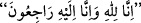
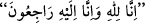

Hz. Âişe (r.anhâ) Rasûlullah (s.a.)’ın beraberinde gitti. Bu sefer, hicâb âyeti olarak
bilinen “Ey îman edenler! siz zamanını gözetlemeksizin, bir yemeğe dâvet
edilmedikçe, Peygamber’in evlerine girmeyin...” (el-Ahzâb, 33/53) âyeti nâzil
olduktan sonra olmuştu. Zira bu âyet hicretin üçüncü senesinde inmişti.
Hz. Âişe (r.anhâ) şöyle demiştir: “(Sefere çıktığımızda) ben hevdece bindirildim ve
yola çıktık. Geri dönerken Medîne’ye yaklaştığımızda bir konak yerine indik. Ben
hâcetimi görmek için yalnız başıma ordudan ayrıldım gittim. Hâcetimi görünce
konaklama yerime geldim. Bir de göğsümü yokladım. Baktım ki Yemen’in göz
boncuğundan dizilmiş gerdanlığım kopup düşmüş. -Bu gerdanlık on iki dirhem
kıymetinde idi- Hemen dönüp gerdanlığımı aradım. Fakat onu aramak beni yoldan
alıkoydu.
Hevdecimi yüklemekle görevli olan kimseler -sâlih bir insan olan Rasûlullah (s.a.)’ın
âzâdlı kölesi Müveyhebe ve arkadaşları- gelip hevdecimi kaldırmışlar ve onu bindiğim
deve üzerine yükleyip götürmüşlerdi. Onlar beni hevdecin içinde sanıyorlarmış. O
zaman kadınlar az yedikleri için hafiftiler. -İnsânü’l-uyûn’da belirtildiği üzere
şişmanlık, yâni insanı yağ ve etin bürümesi çoğunlukla çok yemekten ileri gelir- Onun
için bana hizmet edenler hevdeci yüklemek üzere kaldırdıklarında onun hafifliğini tuhaf
karşılamamışlar ve deveyi alıp götürmüşler.
Ben gerdanlığımı buldum ve ordunun konakladığı yere geldim. Fakat orada kimse
yoktu. Bunun üzerine ben konaklama yerinde bekledim. Beni arayacaklarını ve bulmak
için geri döneceklerini düşündüm. Ben yerimde otururken gözlerim ağırlaştı ve uyuya
kaldım.
Safvân İbnü’l-Muattıl es-Sülemî ordunun peşinden gelirdi. Kurtubî der ki: “Şecaati
sebebiyle Rasûlullah (s.a.) onu ordunun arkasından takipçi kılardı. O sahâbenin
seçkinlerindendi.” O, orduyu takip eder, geride kalan eşyâyı toplar getirirdi. Nitekim
İnsânü’l-uyûn’da böyle denilmektedir. Benim konakladığım yerin yakınında
sabahlamıştı. Uyuyan bir insan karaltısı görünce yanıma geldi ve beni tanıdı.
Ben onun
yâni “Biz Allah’a âidiz ve O’na döneceğiz.” (el-Bakara,
2/156) demesiyle uyandım. Çünkü mü’minlerin annesinin yoldaşlarından geri kalıp
kaybolması bir musîbettir, hem de ne musîbet! Hemen ferâceme bürünüp yüzümü örtüm.
Vallahi onunla bir tek kelime konuşmadım ve ondan
sözünden başka
bir söz işitmedim.
Safvân, edebe uygunluk açısından sükûtü tercih etmişti. Devesini ıhtırıp çöktürdü, ben
de kalkıp deveye bindim. Safvân bindiğim deveyi önünden çekerek yürüdü. Nihâyet
kafile konak yerine indikten sonra öğlen sıcağında orduya yetiştik.
Bazı fakihler, çölde veya benzeri bir yerde kaybolmuş halde bulunan yabancı bir
kadınla yalnız başına kalmanın câiz olduğuna, hattâ yalnız başına terk edildiğinde
kendisi için korkulacak bir durum söz konusu olduğunda ona arkadaşlık etmenin vâcib
olduğuna bu hâdiseyi delil saymışlardır.